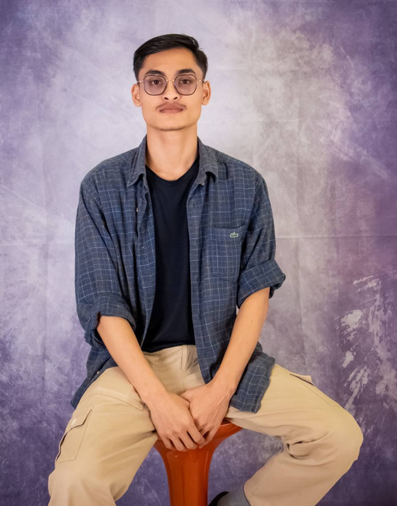

Project Management
Listed in the soft-skills section of my CV.
Hello, I'm Saw Zaw Lin Htet
I am a Communication Arts graduate majoring in Creative Media Technology, with experience managing social media platforms, producing videos, and maintaining an organization website.

I hold a Bachelor of Communication Arts, majoring in Creative Media Technology, from Khon Kaen University International College.
My experience includes managing social media pages, creating content for Facebook, Instagram, and YouTube, producing videos, maintaining a website, designing posters, editing podcasts, and participating in interviews and news-gathering processes.
Listed in the soft-skills section of my CV.
Listed in the soft-skills section of my CV.
Listed in the soft-skills section of my CV.
The roles and responsibilities below are presented directly from my CV.
Karen Society of Nebraska
Created and managed social media content for Facebook, Instagram, and YouTube.
Suwannimit Foundation
Completed an internship in Youth Empowerment & Education.
United Act Youth Organization
Peer-to-peer giving leadership skills at a migrant school.
FED - Foundation for Education and Development
Shared knowledge about human rights in migrant areas.
Mae Tao Clinic
Volunteered for one month in Medical Service IPD (Inpatients Department).
These highlights come only from my work and internship experience.
Social media
Karen Society of Nebraska
Created and managed social media content for Facebook, Instagram, and YouTube, and organized the Karen Society social media pages.
Video production
Karen Society of Nebraska
Produced videos from start to finish, including planning, editing, and engagement optimization.
Website
ypdkarenland.org | silainterbc.com
Updated and maintained the organization website.
Internship
Suwannimit Foundation
Designed posters and promotional materials, edited podcast and video content, and participated in interviews and news-gathering processes.
A combination of digital production skills and the people skills needed to keep creative work moving.
Soft skills
Languages
Major in Creative Media Technology
Khon Kaen University International CollegeBrighter Futures Pathways
Children's Development Center (C.D.C)
Let's create something meaningful
I'm open to communication, social media, and creative media opportunities.
sawzawlinhtet99@gmail.com →